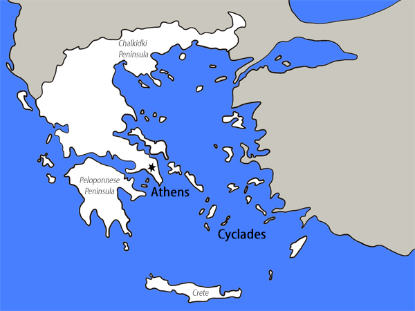

Greece by Region
Greece is a mountainous peninsula, surrounded by the Mediterranean Sea. It is made up of over 1400 islands.
The two most popular destinations in Greece are: Athens and the Cyclade Islands.
To learn more about these two destinations, use the map below.

Athens
Athens is the capital of Greece. It was also the heart of Ancient Greece. Because of this, there is much to see (and do) in Athens.
The Athens International Airport is the busiest in Greece, and serves as a hub for most international travellers.
Cyclade Islands
The Cyclades are a group of Greek islands in the Aegan Sea, many of which are popular holiday destinations.
They are known for their beaches, rugged landscapes, and traditional blue-and-white stucco towns overlooking the sea.
These islands include (amongst many others):
- Santorini
- Paros
- Mykonos
- Milos
- Syros
Thank you for visiting us!